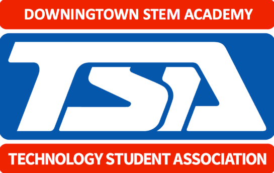
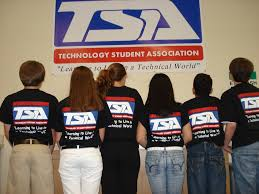
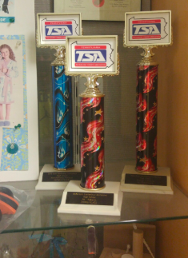

Welcome To Downingtown STEM TSA Chapter
The Downingtown STEM TSA chapter houses nearly 50 members. We have meeting with everyone every first Monday of the Month and
the other Mondays are work days for students who want to come in. We have at least one student participating in one event and
other events with a lot of students. Additionally, our attendance of our students are great and we have students going to
States and Nationals yearly. Our chapter is run by Miss Long and Mr. Marron, engineering teacher with TSA experience.
Join our STEM TSA Chapter for success and fun.
How to Join TSA
Join the STEM TSA Chapter. All you have to do is come to the mandatory meeting in September and select at least 2 events to
participate in , but no more than 6 events. There is $40 to pay in dues to join the amazing group as well.
The most important thing, you need to be willing to work with your peers and work efficiently as we want you to have
the best experience.

STEM Chapter History
We have a lot of students going to states and nationals and they have placed very well.
Last year, we had freshmen teams place 5th at Nationals and they loved everything about the process. We always look for new people to
join and many times, through TSA, students can pursue their goals. Many of our chapter teams have done TSA from 9th grade to 12th and
have went to States and Nationals each time. STEM TSA has a rich history and a lot of our students have the opportunity to pursue their dreams. Our chapter has placed first in States in Biotechnoloy and Engineering Design. We also placed in Promotional Design, CAD Architecture, and we have won the Pennsylvania Inspiration Award for our chapter at States. We have qualified for Nationals many times!

Leadership and Community Service Projects
At the start of each year students are given a design challenge to introduce them to the world of STEM and set the foundations
for a year of hands on problem solving and design. This year we set student groups the challenge of building a water craft
that would allow them to walk across a body of water. Using only recycled materials students were given 4 days to design and
construct their ideas to create a vessel. What resulted was an amazing day of dramatic splashes and learning in action at
Santa Rosa's Spring Lake lagoon. In a 5-week intensive project in spring students were challenged with re-imagining a public
space in the town of Windsor in such a way that it would help to develop community interaction. Student learning experiences
combined novels from their English classes, designing thinking protocols, field trips to nearby examples of community hubs,
and reflection upon community evolution through American history. The project culminated with students building installations
to be placed around the town of Windsor where they interviewed participants and recorded public reaction. As part of our
effort to provide educational outreach in STEM and push our students to take leadership roles, the Axis STEM 11/12 program
created a STEM Design Day at the Sonoma Jet Center. More than 200 students filled an air hangar and took on the task of
designing and building a humanitarian aid airdrop system. Students had to release their prototypes from 25 feet above the
ground and have them glide as far as possible with their fragile cargo of a raw egg. The experience was guided by 11/12
STEM coaches that guided teams of 9th and 10th graders.
GO TO OUR MARCHING BAND PAGE
GO TO STEM TECHNOLOGY/ENGINEERING PAGE
Copyright © 2019 https://flyingtoucans.github.io